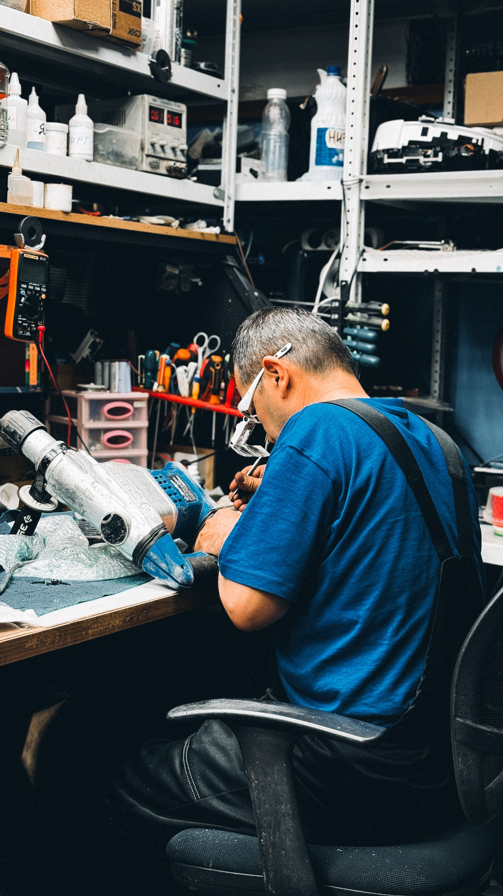

Kami menyediakan layanan servis laptop dan HP yang cepat dan andal untuk mengembalikan perangkatmu ke kondisi terbaik. Layar retak, baterai bermasalah, atau kendala software, semua kami tangani.
Booking lewat form lengkap kami, pilih metode antar/jemput, lalu bayar langsung online.
Booking SekarangLayanan servis untuk semua perangkat, mulai dari HP sampai laptop, dikerjakan oleh teknisi berpengalaman.
Teknisi kami sudah menangani ratusan kasus servis, mulai dari kerusakan ringan hingga yang cukup rumit.
Setiap perbaikan yang kami lakukan disertai garansi, jadi kamu bisa lebih tenang setelah servis selesai.
Pilihan layanan servis untuk HP, laptop, dan tablet dengan harga transparan.

FIXIN menangani perbaikan HP, laptop, dan tablet dengan proses kerja yang jelas dan harga transparan, sehingga pelanggan tahu persis apa yang mereka bayar.
Setiap perbaikan dicatat dan disertai garansi sesuai jenis layanan.
Sebagian besar servis ringan selesai dalam hitungan jam, bukan hari.
Estimasi biaya disampaikan di awal, tanpa biaya tersembunyi.
Booking servis sekarang dan lacak progresnya kapan saja lewat kode servis.
Booking Sekarang